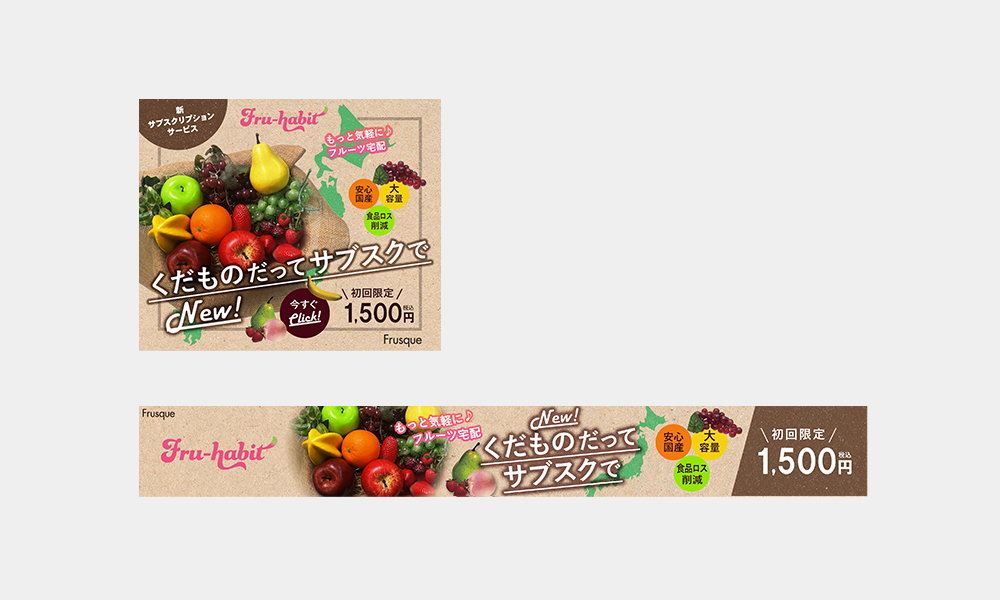

フルーツ宅配の新サブスクリプションサービスの認知と顧客獲得のためのバナーを作成。
URL
担当
デザイン・コーディング
サイトの目的
サービスの認知と新規クライアントの獲得
ターゲット
20～60代の女性が主な客層
デザインについて
「サブスク」という言葉が近年多くの層に浸透していることからストレートなキャッチコピーを考えました。特に動画やオーディオ、日用品の宅配、化粧品など当たり前になっているものへ、果物も加えて欲しいという思いがあります。
ナチュラルな質感の背景で自然で安全な製品のイメージとカラフルで様々なフルーツが盛ることで盛りだくさんで豪華、お得感を表現しました。また日本の各地から送られてくる様子が分かるように日本地図をあしらっています。「サブスク」という言葉だけでは説明不足に感じる方向けに、わかりやすく定期便の言葉も入れるようにしました。